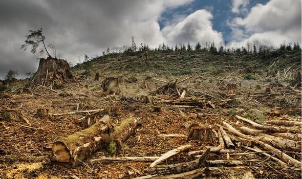
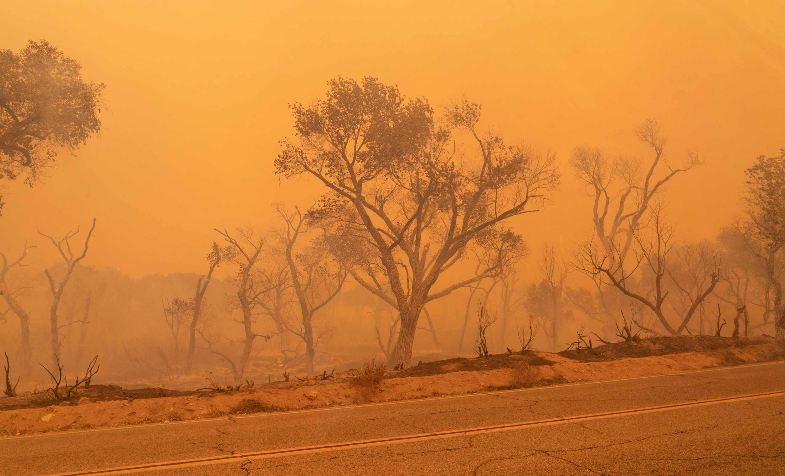

Nature is a vast and intricate system that encompasses everything from towering mountains to tiny microbes. It is
the source of life on Earth, providing the air we breathe, the water we drink, and the food we consume. The beauty
of nature is found in its diversity — from the vibrant colors of a forest in autumn to the serenity of a calm ocean.
Each ecosystem, whether it's a rainforest, desert, or coral reef, has its own unique role in maintaining the balance
of life.
Beyond its physical beauty, nature offers immense psychological and emotional benefits. Spending time outdoors has
been shown to reduce stress, enhance creativity, and improve overall well-being. The gentle rustling of leaves, the
sound of birdsong, or the sight of a clear blue sky can provide a sense of peace and connection that is hard to
replicate in the hustle and bustle of modern life.
However, nature is also fragile. Human activities like deforestation, pollution, and climate change have put immense
pressure on natural ecosystems. Many species are on the brink of extinction, and vital resources like clean water
and fertile soil are becoming increasingly scarce. Preserving nature is essential, not only for the survival of
countless species but also for the well-being of humanity. By protecting nature, we safeguard the intricate web of
life that sustains us, ensuring that future generations can experience its beauty and benefits.
JOIN
Conservation
Nature conservation is the practice of protecting, preserving, and restoring the natural environment to ensure the
survival of species, habitats, and ecosystems for future generations. It is a response to the growing threats that
human activities pose to the planet, such as deforestation, pollution, overfishing, and climate change. These
activities have led to the loss of biodiversity, the disruption of ecosystems, and the degradation of vital
resources like air, water, and soil.
At the heart of nature conservation is the recognition that humans and nature are interconnected. The health of
natural ecosystems directly affects our own well-being, as they provide essential services like clean water, fertile
soil for agriculture, pollination, and climate regulation. For example, forests act as carbon sinks, absorbing vast
amounts of carbon dioxide, which helps mitigate the impacts of climate change. Wetlands filter water and prevent
flooding, while oceans provide food and regulate global weather patterns.
Conservation efforts take many forms, ranging from the protection of endangered species and the establishment of
nature reserves to sustainable resource management and reforestation projects. Governments, non-profit
organizations, and local communities play vital roles in these efforts, often working together to create policies,
raise awareness, and implement practical solutions.
One key approach is habitat preservation, which involves protecting large areas of natural land from development or
destruction. Another important strategy is promoting sustainable practices, such as responsible farming, fishing,
and forestry, which balance human needs with the health of ecosystems.
The goal of nature conservation is not only to prevent further harm but also to restore damaged ecosystems to their
former health. By actively conserving nature, we help maintain the balance of life on Earth and ensure that future
generations can continue to benefit from its resources and beauty.
Extinction
Nature extinction refers to the permanent loss of species, ecosystems, and biodiversity, a process that has
accelerated dramatically due to human activities. Extinction is a natural part of evolution, but the current rate is
far beyond the normal background levels. Scientists estimate that species are disappearing at a rate 1,000 to 10,000
times faster than expected due to causes such as habitat destruction, climate change, pollution, overexploitation of
natural resources, and the introduction of invasive species.
The extinction of species has devastating ripple effects on ecosystems. Each species plays a unique role in
maintaining the balance of its habitat, whether as a predator, prey, pollinator, or decomposer. When a species goes
extinct, it can cause disruptions in food chains and ecological processes, leading to further losses. For example,
the extinction of a single pollinator species can affect the reproduction of numerous plants, which in turn impacts
the animals that depend on those plants for food and shelter.
One of the primary drivers of nature extinction is habitat destruction, often caused by deforestation, urbanization,
and agricultural expansion. As natural habitats are cleared for human use, animals and plants lose their homes, and
ecosystems become fragmented, making survival more difficult. Climate change also plays a significant role, as
shifting weather patterns, rising temperatures, and ocean acidification create inhospitable conditions for many
species.
The loss of biodiversity through extinction weakens ecosystems' resilience to change, making them more vulnerable to
collapse. This, in turn, threatens the resources that humans rely on for survival, such as clean water, fertile
soil, and medicinal plants. Efforts to combat nature extinction include conservation, habitat restoration,
sustainable resource management, and climate action. Without swift intervention, the current extinction crisis could
lead to irreversible damage to the planet's ecosystems and the loss of countless species forever.


